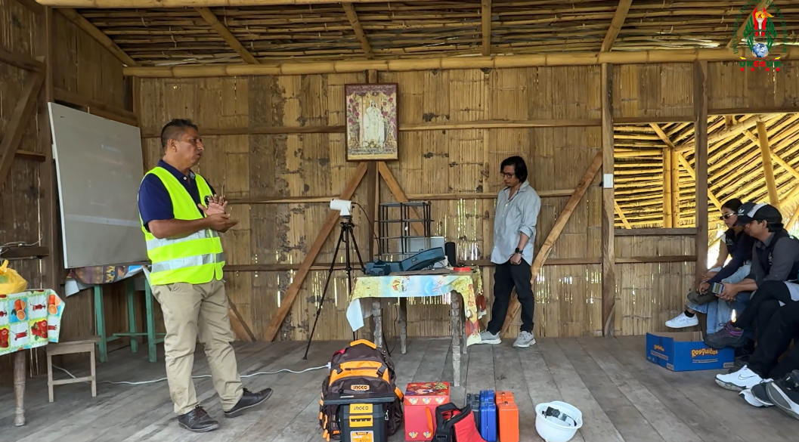
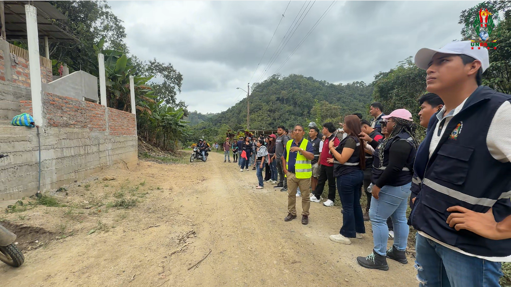
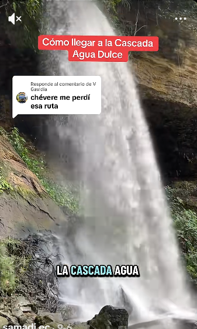

🤝 LA HONESTIDAD COMO EJE TERRITORIAL
EL CONOCIMIENTO TRANSFORMA — PROYECTO DE FORMACIÓN MODULAR
ESTRUCTURA I / ESTRUCTURA II | Carrera de Ingeniería Civil — UNESUM
Articulado con el Proyecto Multidisciplinario de Agua Dulce
REFERENTE PARA LATINOAMÉRICA1. 🎯 EL PROBLEMA: LA HONESTIDAD EN EL MUNDO ACADÉMICO
En el mundo académico tradicional, la honestidad se reduce a no copiar en los exámenes o no plagiar tesis. Es una honestidad formal, desvinculada del territorio y de las consecuencias reales.
Pero en ingeniería civil, la deshonestidad tiene consecuencias concretas:
| Situación | Consecuencia de la Deshonestidad |
|---|---|
| Ocultar un error de cálculo | Colapso estructural, pérdida de vidas |
| Reportar daños menores a los reales | Evacuación tardía, víctimas |
| Falsificar datos de laboratorio | Diseño inadecuado, falla prematura |
| Ignorar normas de seguridad | Responsabilidad legal y penal |
La pregunta es: ¿Cómo enseñar honestidad en ingeniería civil de forma que no sea un discurso vacío?
2. 💡 LA RESPUESTA: EL TERRITORIO RURAL COMO AULA DE HONESTIDAD
El proyecto multidisciplinario de Agua Dulce (parroquia La América, cantón Jipijapa) es el escenario donde la honestidad deja de ser un concepto abstracto y se convierte en una práctica territorial.
📍 Caso: La Escuela Presidente Urbina (Agua Dulce)
Realidad: 9 estudiantes, 1 docente, riesgo de cierre por falta de infraestructura.
Desafío: La comunidad necesita una evaluación estructural honesta, no un diagnóstico complaciente.
Lección: El ingeniero que evalúa la escuela debe reportar la vulnerabilidad real, aunque eso implique recomendar el cierre temporal o el reforzamiento urgente.
📍 Caso: El cortometraje "La Honestidad"
Origen: Producido en el marco del proyecto multidisciplinario de Agua Dulce.
Propósito: Relacionar la ética profesional con la calidad, la trazabilidad y la responsabilidad en las decisiones de ingeniería.
Mensaje: La integridad profesional debe mantenerse incluso cuando las deficiencias de una decisión técnica no son visibles de inmediato.
📸 EVIDENCIA VISUAL: LA HONESTIDAD EN EL TERRITORIO
Estas imágenes no son ilustraciones decorativas. Son evidencia de que el proyecto se ejecuta en el territorio, con sus limitaciones y sus potencialidades.

🔬 Laboratorio en Aula Rural
El docente y los estudiantes validan experimentalmente la maqueta del pórtico. La honestidad aquí es no fingir que se necesita un laboratorio costoso para hacer ciencia.

🌱 Inspección de Campo
La comunidad y los estudiantes observan el terreno. La honestidad académica exige reconocer las limitaciones del contexto rural antes de proponer soluciones urbanas que no aplican.

💧 Cascada Agua Dulce
La Cascada San Nicolás, atractivo natural de Agua Dulce. La honestidad es reconocer el valor del territorio y preservarlo para las futuras generaciones.
3. 🏛 LOS CUATRO PILARES DE LA HONESTIDAD TERRITORIAL
HONESTIDAD TÉCNICA
Reportar los resultados reales, aunque sean desfavorables. No ocultar errores de cálculo ni sobreestimar la capacidad estructural.
HONESTIDAD TERRITORIAL
Reconocer las limitaciones del contexto rural. No imponer soluciones urbanas a problemas rurales. Escuchar a la comunidad.
HONESTIDAD ACADÉMICA
Declarar los supuestos, las fuentes y las incertidumbres. Distinguir entre dato observado, parámetro estimado y supuesto.
HONESTIDAD PROFESIONAL
Firmar, documentar y responsabilizarse por las decisiones. No delegar la responsabilidad a otros.
4. 🌎 REFERENTE PARA LATINOAMÉRICA
| Elemento | Modelo Tradicional | Modelo ECT-UNESUM-2026 |
|---|---|---|
| Honestidad | Concepto abstracto, discurso moral | Práctica territorial, vinculada a casos reales |
| Territorio | Telón de fondo | Aula viva, laboratorio de aprendizaje |
| Comunidad | Beneficiaria pasiva | Sujeto activo del proceso |
| Evaluación | Examen memorístico | Rúbricas por competencias + ética |
| Producto | Nota final | Certificado + impacto social |
5. 🖥 APLICACIÓN EN LA PLATAFORMA ECT-UNESUM-2026
| Elemento de la Plataforma | Integración de la Honestidad |
|---|---|
| Módulo M01 (Inercia) | El estudiante declara los supuestos del modelo y verifica la coherencia de los resultados. |
| Módulo M03 (Viga + Sismo) | El estudiante reporta la vulnerabilidad real de la estructura, sin minimizar el riesgo sísmico. |
| Bloque D (Decisión Profesional) | El estudiante decide éticamente, documenta su decisión y asume la responsabilidad. |
| Certificado | Incluye la frase: "El verdadero ingeniero interpreta, decide, contextualiza, se responsabiliza". |
| Responsorio Digital | Documenta la trazabilidad de los productos y la honestidad de los datos. |
6. 💬 FRASES PARA EL AULA
- "No ocultar la incertidumbre. No subestimar el riesgo. No comprometer la seguridad."
- "Un ingeniero honesto reconoce sus límites, reporta sus errores y corrige a tiempo."
- "La honestidad no es un adorno moral: es una estructura invisible que sostiene la seguridad de las obras."
- "La escuela que el sistema olvidó, la comunidad que la recuerda, la UNESUM que la recupera. Vamos a cambiar la historia."
- "Los números son solo el vehículo. El verdadero ingeniero interpreta, decide, contextualiza, se responsabiliza."
EL CONOCIMIENTO TRANSFORMA — PROYECTO DE FORMACIÓN MODULAR
Estructura I / Estructura II — Carrera de Ingeniería Civil — UNESUM — PI 2026
Docente responsable: Ing. Gery Lorenzo Marcillo Merino
"La honestidad refresca el pensamiento académico porque lo obliga a mirar el territorio."